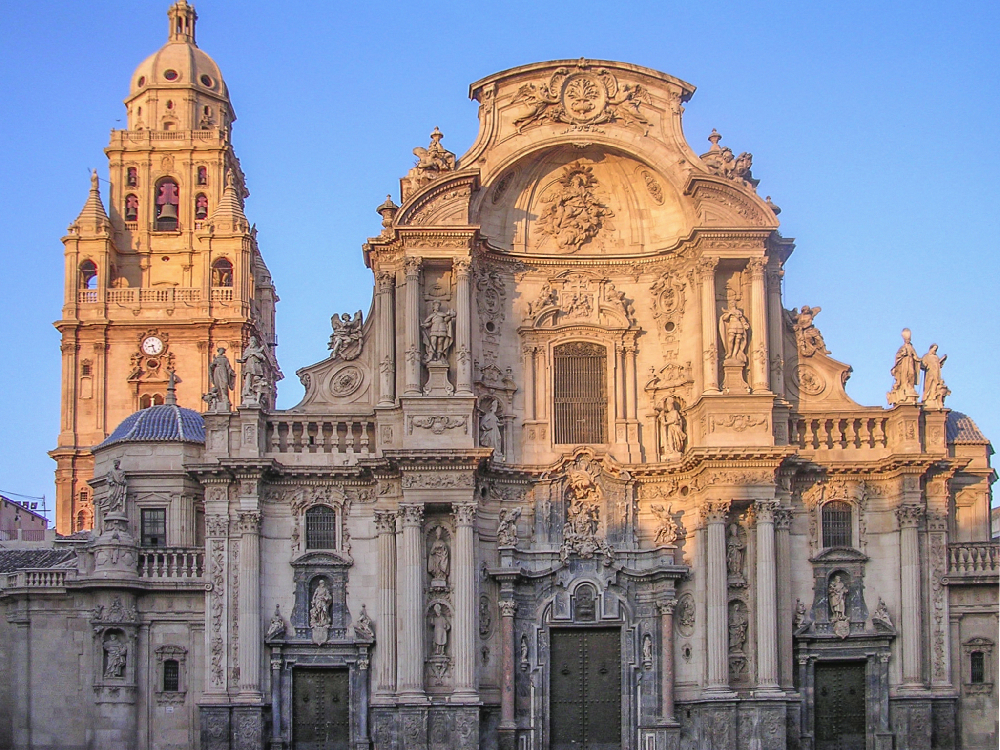

Historia
Conoce la historia de la Catedral de Murcia
Exterior
- Fachada principal (1737 - 1751)
- Portada de los Apóstoles (1465 - 1480)
- Portada de las Cadenas (s. XVI - s. XVIII)
- Torre Campanario (s. XVIII)
Fachada principal o imafronte
De estilo barroco, la fachada principal o imafronte es de una belleza y monumentalidad de excepción, única en su género. Sustituye a una fachada anterior, realizada a mediados del siglo xvi bajo la dirección de Jerónimo Quijano, en tiempos del obispo Esteban de Almeyda (1546-1563).
En el siglo xviii, debido a las continuas riadas y frecuentes terremotos, el imafronte se vio afectado acusando una preocupante falta de firmeza. El Cabildo Catedralicio pidió informes a Sebastián Feringán (ingeniero militar director de las obras del Arsenal de Cartagena) y Fray Antonio de San José, que aconsejaron su demolición total.
En 1732 se comienza a demoler la fachada anterior, procediéndose a realizar la nueva entre 1737 y 1754.
Orientada a occidente, a lo que desde 1759 sería la plaza del Palacio (posteriormente llamada plaza del Cardenal Belluga), se pensó como un retablo de piedra según encargo del propio Cabildo y del Cardenal Belluga, siendo ejecutada por el arquitecto Jaime Bort (basándose en planos de Feringán), que contó con numerosos colaboradores como Manuel Bergaz, José Campos, Juan de Gea, y José López. La cimentación se debe al propio Sebastián Feringán.
En 1749 Jaime Bort marchó a Madrid para trabajar en la Corte, continuando las obras su discípulo Pedro Fernández, quien terminó los trabajos en 1754.
La financiación de la obra pasó por serias dificultades, que se superaron gracias a las aportaciones de particulares, de la Casa Real y el Cardenal Belluga.
El imafronte está enteramente dedicado a la Santísima Virgen María, titular del templo, apareciendo en ella también incontables efigies de santos y mártires vinculados a la Diócesis de Cartagena; muchas de ellas fueron realizadas por el imaginero francés Antonio Dupar.
La fachada está dividida en dos cuerpos horizontales y tres tramos verticales. Los verticales están divididos por grandes columnas uniéndose los laterales al central por medio de unas grandes volutas, rematándose la calle central con una gran moldura curva que, como un frontón, forma un casquete de bóveda con la escultura de la Asunción de la Virgen. En la base de los tres cuerpos se abren las tres puertas que corresponden a las tres naves del interior del templo: las dos laterales (la de San José o del Cabildo y la de San Juan o del Concejo) y la central, llamada Puerta del Perdón (la cual sólo se abre con ocasión de grandes solemnidades), coronada por una gran hornacina con el grupo escultórico de la Virgen María con los Arcángeles.
La fachada estuvo coronada por una gran estatua de Santiago clavando la cruz en el suelo (ya que la tradición dice que el apóstol entró en Hispania por el puerto de Cartagena), pero fue retirada debido a su elevado peso en 1803, siendo sustituida por una cruz que fue derribada por el Terremoto de Torrevieja de 1829.